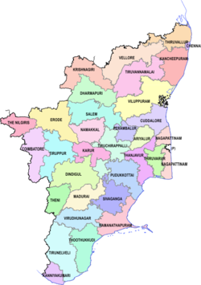

Tamil Nadu, a vibrant state in the southeastern part of India,
is known for its rich cultural heritage and stunning architecture.
Famous for its ancient temples, such as those in Madurai and Thanjavur,
the state boasts intricate Dravidian architecture and historic monuments.
Tamil Nadu's diverse landscape ranges from the serene beaches of Chennai
to the lush hills of the Western Ghats.
The state is also renowned for its classical arts, including Bharatanatyam dance
and Carnatic music, along with its flavorful cuisine.
With its deep-rooted traditions and vibrant festivals,
Tamil Nadu continues to be a center of cultural and historical significance.
|
 |